超多様プレイスタイルSTG
トップ
ストーリー
ゲーム内容
ゲーム画面
ダウンロード
サポート情報
ゲーム画面
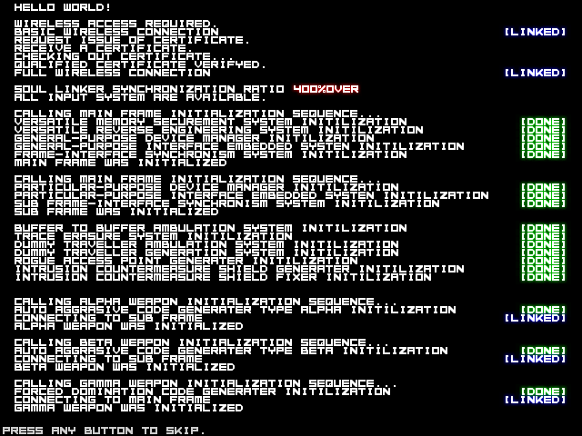
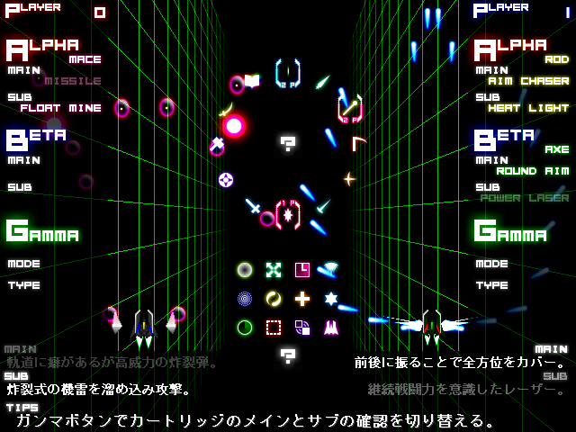
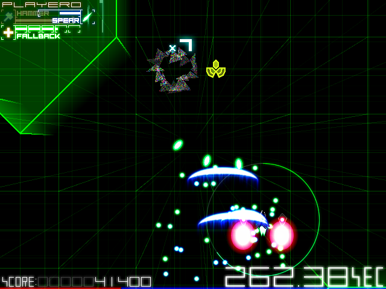
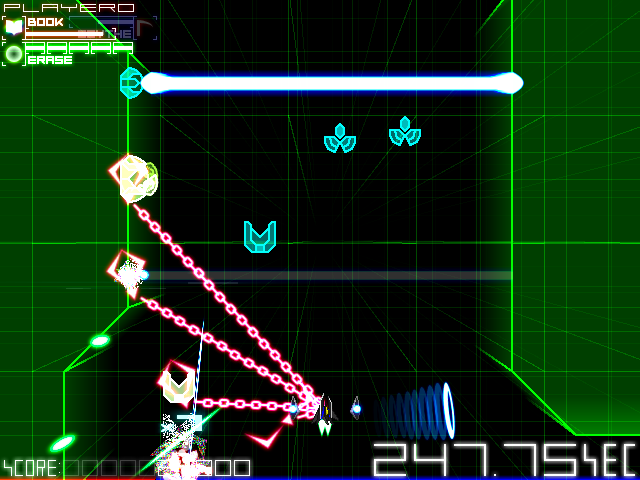
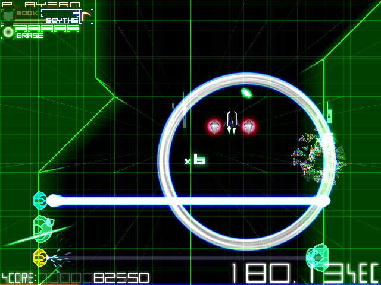
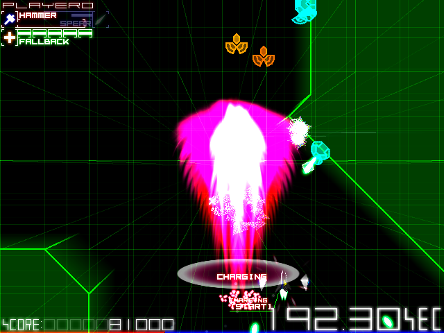
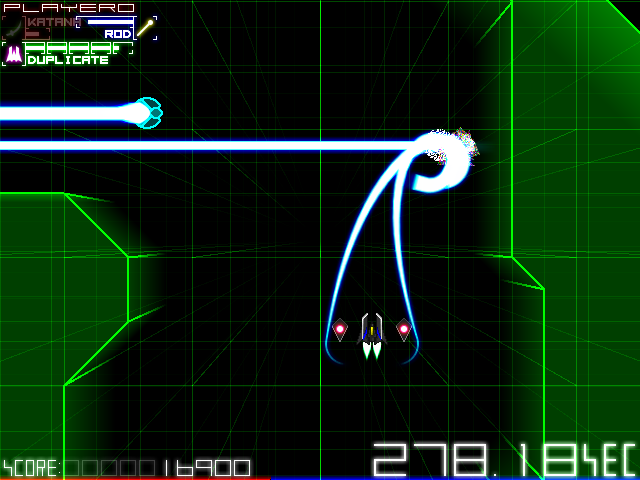
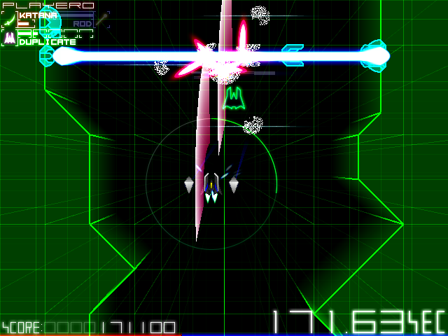
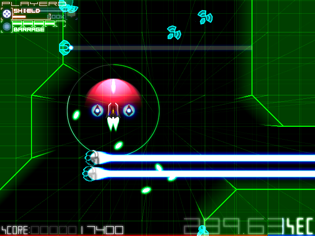
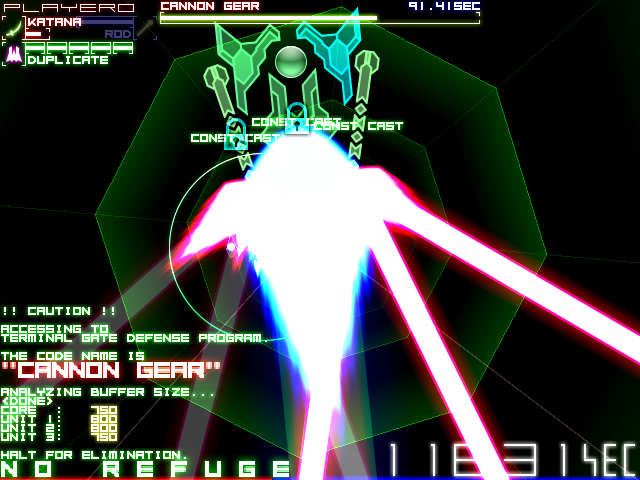
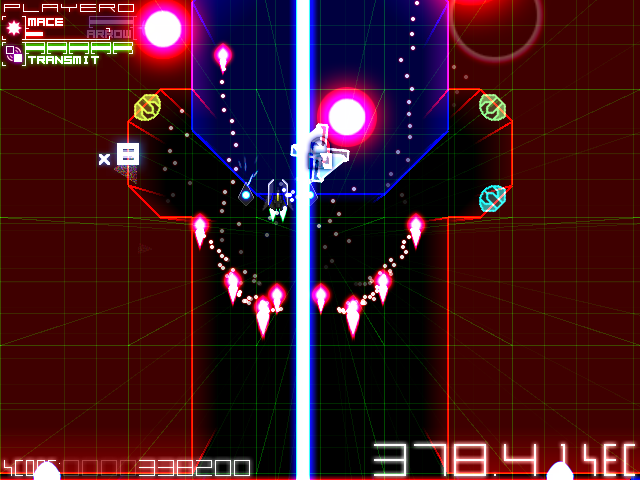
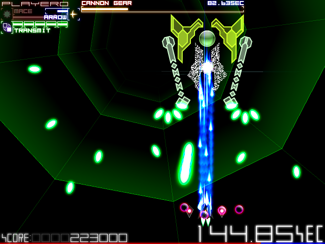
プレイ動画(ネタバレ無し)
3面までのプレイが記録されているプレイ動画です。
<a href="http://www.nicovideo.jp/watch/sm18529610">【ニコニコ動画】Project Repliser Stage2α 60fps版</a>
プレイ動画(ネタバレ有り)
4面以降のプレイが記録されているプレイ動画です。 閲覧は自己責任で。
<a href="http://www.nicovideo.jp/watch/sm18606259">【ニコニコ動画】Project Repliser C82版 part.1</a>
copyright (C) 2012-2021
AQUA FACTORY
All Rights Reserved.